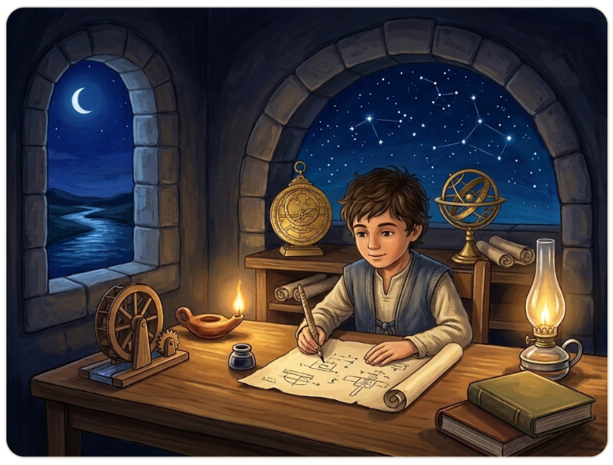
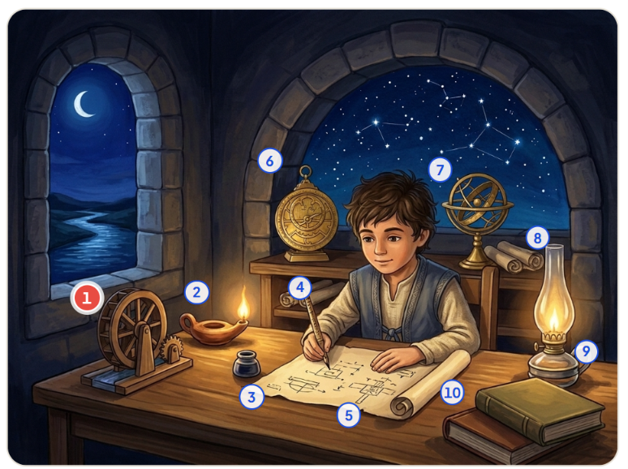

Merhaba sevgili öğrenciler! Bu etkinlikte bir bilim insanının çocukluğuna yolculuk yapacağız. Önce çocuğun odasını dikkatle inceleyeceksiniz. Sonra ikinci resimde merak ettiğiniz nesnelerin numaralarına tıklayıp açıklamalarını okuyacaksınız. Hazırsanız Etkinliğe Başla düğmesine tıklayınız.
Bu resimde bir bilim insanının çocukluğunu görüyorsunuz. Odasını dikkatle inceleyiniz. Hazır olduğunuzda Devam düğmesine tıklayınız.

Şimdi aynı odayı numaralarla birlikte görüyorsunuz. Merak ettiğiniz kısımlardaki numaralara tıklayarak açıklamaları okuyunuz.

Nesne açıklaması...